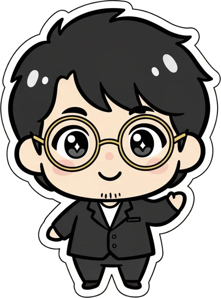
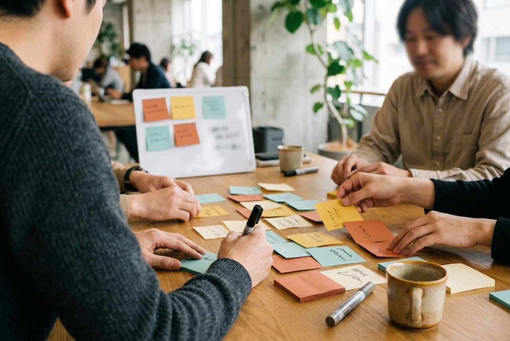

広告の人、SEOの人、ECの人…
全く違うマーケター同士でチームを組むと、
1人では絶対に浮かばないアイデアが形になる。
イベントが終わる頃、きっと
新しいAIの使い方を、隣の人から持ち帰ってます
Letter
AIとの試行錯誤って、1人だと限界を感じる。
でも、AIの使い方ってどうやって学ぶんだろ…。そんな悩みを抱えていませんか？

こんにちは、かいです。AIMARKのメンバーですが、今回はイベントの主催者をさせていただきました！
このイベントは、僕自身がAIMARKに感じている価値を、1日にギュッと凝縮して提供したいという個人的な思いを込めて、みんなで設計しました。
その価値とは一体何か？それは、「みんなで楽しみながら、AIスキルが上達する」です。
僕がAIMARKに入ったばかりの頃、AIエージェント触りたてだったんですね。
MCP、サブエージェント、CLAUDE.md、自己改善ループ、、、こういったものを見聞きはしてたけど、何をどう手をつけたらいいのかさっぱり分からずにいました。
それが今では、ショート動画の自動投稿の仕組みも完成させ
AIが質の高いアウトプットをポン出しするための自己改善ループもスキルに組み込んだり、以前よりだいぶ蓄積されてきました。
我ながら、かなり良い感じの成長スピードでAI力が上達しているなと実感しています。
AIMARKがなかったら、間違いなく同じだけの成長は得られませんでした。
これはAIあるあるだと思うんですが、AIって有象無象の情報が大量に流れますよね。
YouTubeの解説動画、Xのポスト、Udemyの講座、書籍、、、
僕は、1年前も、今も、同じぐらい情報をウォッチしています。
でも1人でやっていた頃、「結局何が正しいの？」「本当はみんなどこで課題に躓いて、どうやって解決していくの？」
っていう、AI驚き屋やポジショントーク成分強めのAI情報商材屋、AIコンサルタントの情報が多くて、まずどの情報を当てにしていいのかさっぱりわかりませんでした。
でもAIMARKのもくもく会（あ、今は「みんなでお題やろう会」でしたね）に毎回参加し、オフラインのイベントにも全部出席している、AIMARKイチの暇人だからこそ実感していることがあるんですね。
ここで得られる情報は何が違うかというと、実務で実際にどうAIを使っているか、
同じ熱量で試行錯誤している人たちから、直接AIの使い方を聞くことができるということです。
これを今まで、お題やろう会やオフライン会で、色んな人の話を聞く中で「Aさんはスキルをこういうふうに使ってた」「BさんはこのMCPを入れて、こういうふうに業務を回してたな」「Cさんはサブエージェントをこういう指示の出し方してたな」といった、
ネットには全くない、血肉の通ったAI活用法の引き出しが、ちょっとずつ自分の中に蓄積されていくんですね。
で、自分もAIを使っていく中で、当然「全然うまくいかないー！」という時があるわけです。
そんな時に、「あ、そういえばCさんがこういうふうにサブエージェントに指示してたな」と思い出し、「この活用法なら解決するんじゃね…？」と、新しい方法を試すことができるんですね。
これが僕のAI力を底上げしてる、大きな要因になってるんですね。
つまり、AIMARKを通じて集めた引き出しから、色んな打ち手を試せる。そして今のAIは賢いから、こちらから提案したものをいい感じに仕組みとして落とし込んでくれます。
大事なのは、AIに対して壁を感じた時、解決するのは「どれだけ引き出しを持っているか」なんですね。
だから僕にとって、誇張でもなんでもなく、AIMARKで自然と集まった引き出しが、ブレイクスルーのきっかけとなっていったのです。
すみません、ちょっとだけ今から、皆勤賞マウントを取りますw
正直僕としては、AIMARKに関われば関わるほど、活きた引き出しが蓄積されていくからこそ、
「もっと皆さんも活用したらいいのに…」と、“勿体無い”と思ったりする時があるんですよね。
というのも、これだけ僕がAIMARKから色々と吸収できたのは、毎回欠かさず木曜は出席し、オフラインのイベントにも全部出席してこれたからに尽きるんですよね。（皆勤賞マウント）
例えば木曜の「みんなでお題やろう会」でも、とよくらさんやあやみさんが、プロンプトの入れ方を見せてくれたり、
実はXでも発信されてない、「こんなスキル便利だよ〜」とか「こんなMCP入れると楽になるよ〜」とか、教わったことがたくさんあって、この時間は結構引き出しが溜まっているんですよね。（あと単純に、チャットでワイワイできて楽しいですw）
Discordも、皆さん本当に親切なので、返信をすればすごく丁寧に色々と教えてくれます。
みんなでお酒を飲んだら、色んな人が本当に全然違うAIの使い方をしているので、さまざまな話が聞けて本当に面白いんですよね。
とはいえ、「だからもっと発言すればいいじゃん！」とならない気持ちも、十分にわかります。
そもそも僕自身、実はだいぶ人見知りが強いので、Discordには「🙋♂️聞いていい？」がありますが、あそこで質問するの、ちょっとハードル高いですよね。
ちょっと時間が空いちゃうと、独り言で呟くのも、なんとなくハードルが上がってしまうし、
毎週木曜日の夜に毎回参加するのも、仕事が忙しかったり、ご家庭をお持ちの方なんかは、本当に時間の確保がキツイと思います。
だからこそ！！！
僕が今までAIMARKで感じてきた価値が、全部まるっと手に入る1日を作りたい！
そういう個人的な思いで、とよくらさんとあやみさんにサポートいただきながら、かおりさんやしいなさんと一緒にイベントの企画を練ってきたんですね。
では、一体なぜアプリ開発をやることになったのか？
それは、AIを使う瞬間の、プロンプトの指示の出し方、物事を考える時の視点、考えたこともないようなAIの使い方、、、
こういう実務で発生する生のAI活用法って、会話の中で引き出すのってかなり難易度高くないですか？
僕の場合は皆勤賞なので（暇人なので）色んな方と楽しく交流できたから、ちょっとずつ引き出しを作れただけで、
1日で狙って引き出してください！と言われても、まぁ難しいですよね。
だから、「チームを組んで、一緒にちょっとムズい課題に取り組む」これが重要なんですね。
最後に、優勝チームを決める投票も行うので、ぜひ皆さん優勝に向けて頑張っていただきたいのですが、
ちょっとガチになってチームで取り組んで行ったら、色んな意見を出し合ったり、実際にAIをどう使って、どんなアプリを設計するかを議論しますよね。
この形を作っていく過程の中に、1人1人が持つ引き出しが次々と出てくると思うんですよ。
だから、あえて僕らの専門外であるアプリ開発に、みんなで全力で取り掛かる。
しかも、売り方まで自分たちで考える。
これをAIMARKのメンバーでやったら、絶対にすごい1日になるなと思ったんです。
きっとイベントでは、1人では絶対に浮かばないアイデアが形になっていきますよ。
AIMARKには、SEOの人、広告の人、販売特化の人、全く違うタイプのマーケターがいます。
そんな、全然違うマーケター同士で意見を出し合い、AIの使い方を教えあったりしたら、1日で相当引き出しが増えると思いませんか？
そして、共にアプリを作ったチームメイトは、その夜からAI友達になって、翌日からDiscordで一緒にワイワイできるようになります。
（大人になると、共通の趣味の友達を作れる場があるって、本当に貴重だなと実感します。）
アプリ開発がテーマと聞いて、身構えた方もいるかもしれません。
もちろん、開発経験は不問です。（というか僕自身も、開発経験なんて全くありません）
当日は、AIに強い人も、そこまで強くない人も一緒にワイワイしたいと思っています。
開発経験は問いません。手を動かすのはAIです。
できたものを決めるのも、参加者全員の投票です。軸は「自分が使いたい」「売れそうだと思った」サービス。だから、技術力の高さを競う場ではありません。
万が一、技術面で躓いてしまった場合も、とよくらさんやあやみさんが全力で助けてくれます。
だから、「AI好きな人たちとワイワイしながら、普段見ないAIの使い方を知りたい」という方は、ぜひ参加して欲しいです。
ただ、会場の関係上、参加枠は15名限定となってしまいました。
もしピンと来たなら、ぜひ奮ってご参加ください！
ぜひ一緒に、AI友達作って、いっぱいAI活用法を発見できる、とっても充実した1日にしていきましょう😆
Schedule
朝、全チームに同じお題が出ます。
そこから3〜4名のチームで、「誰の、どんな場面の、何を解決するサービスにするか」を決めて、AIで形にして、売り方まで考えます。
夕方には、同じお題から始めたはずの5チームが、全く違うサービスを持って並びます。それを全員で見る日です。
ターゲット、用途、利用シーン。切り口を変えながら、チームでお題を再解釈します。
ゴールは、「誰の、どんな場面の、何を解決するサービスか」が1行で言えること。ここが、マーケターの本業がいちばん効くところです。

見つけた価値を、AIでアプリの最小版にしていきます。
完成品でなくて大丈夫です。まず、触れるところまで。詰まったら手を挙げてください。技術サポーターが入ります。
誰に売るか。何を価値として伝えるか。サービス名とキャッチコピーまで作って、3分の発表に仕立てます。
最後は全員の投票です。軸は「自分が使いたい」「売れそうだと思った」サービス。技術力の高さを競う場ではありません。
| Time | Programme |
|---|---|
| 10:00 | 受付・開場 |
| 10:15 | オープニング（お題発表・チーム発表） |
| 10:35 | チーム内アイスブレイク（自己紹介から始めます） |
| 10:50 | ① FIND｜価値を見つける |
| 12:20 | 中間共有・昼休憩 |
| 13:00 | ② MAKE｜AIで形にする（途中休憩あり） |
| 15:30 | ③ SELL & PITCH｜売り方とプレゼンをつくる |
| 16:15 | 発表（1チーム3分） |
| 16:40 | 全員投票 |
| 16:50 | 表彰・クロージング |
| 17:00 | 終了（希望者で懇親へ） |
時間は目安です。正直に書くと、運営も全員、この形式のイベントは初めてです。だから細かい手順書は用意せず、チームの判断で前後させてもらう進行にしています。
代わりに、お昼の中間共有で各チームが「うちはこの方向で行きます」を1分ずつ話します。他のチームの切り口が耳に入るのは、ここが最初です。
Outline
| 日程 | 2026年9月後半を予定 （会場の確定後、正式にご案内します） |
|---|---|
| 時間 | 10:00〜17:00 （受付 10:00〜／終了後、希望者で懇親） |
| 形式 | オフライン開催 |
| 会場 | 調整中（確定次第、このページでご案内します） |
| 定員 | 参加者15名（3〜4名ずつのチームに分かれます） |
| 参加費 | 調整中（会場費の確定後にご案内します） |
| 持ち物 | ノートPC（必要な環境は、参加確定後に事前にご案内します） |
| 参加条件 | 開発経験・チーム開発の経験は問いません |
| サポート | 技術サポーターが各チームを巡回します |
| 主催 | AIMARK運営委員会 |
チームは運営が組みます。仕事のジャンルや、普段使っているAIが散らばるように分けます。
会場と参加費は、決まり次第このページを更新します。
Questions
参加できます。というより、開発経験ゼロを前提に設計しています。手を動かすのはAIで、技術サポーターが各チームを巡回します。必要なのは、コードを書く力より「誰が欲しがるか」を考える力のほうです。
当日は、AIに強い人も、そこまで強くない人も混ざります。広告の人とECの人では「誰が欲しがるか」の答えが違う。毎日見ているものが違うこと自体が、この日の材料です。詳しさより、あなたの職種の視点を持ってきてください。
最初の15分は、自己紹介とアイスブレイクから始めます。1チーム3〜4名の少人数で、全員に発言の機会が回る進行にしています。
筋の悪いアイデアほど歓迎です。FINDの前半は「NGなし・数優先」で、思いついた案を全部書き出すルールにしています。運営が先に、いちばん売れなさそうな案を出します。
手を挙げてください。技術サポーターか運営が入ります。必要なら、他のチームも含めて全員で考えます。詰まったチームを放っておかない進行にしています。
当日の朝に発表します。事前に決めすぎると、当日の面白さが削れるからです。代わりに、参加確定後のアンケートで「AIで作ってみたいもの」を聞きます。お題の範囲は、その回答を見て決めます。
完成度は問いません。まず「触れる」ところまでを目指します。投票の軸も「自分が使いたい」「売れそうだと思った」サービスで、技術力の高さを競う場ではありません。
17時に終了します。そのあと、希望者で懇親の場を予定しています。こちらは自由参加です。
Apply
朝は、隣の人が何をやっている人かも知りません。夕方には、その人の手元を丸一日ぶん見終わっています。
参加を申し込む 1DAY申込の受付は、会場と参加費が決まってから開始します。決まり次第、このページとDiscordでお知らせします。